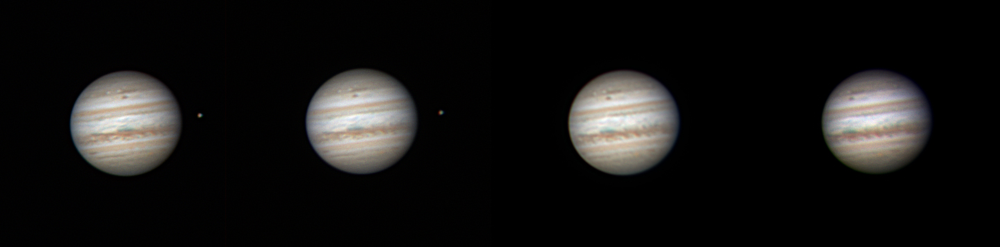
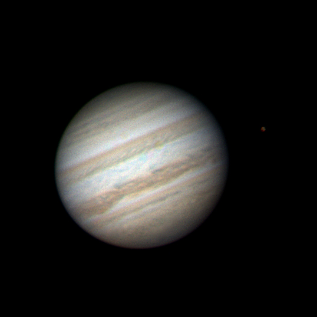
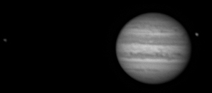
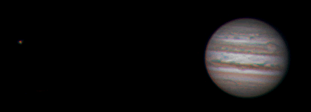
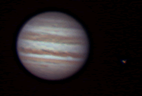
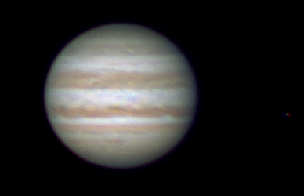
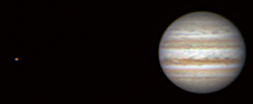

← Images archive
Jupiter
Telescope + Camera: 0.35m SCT + DMK21
First attempts at high resolution planetary imaging using the DMK21 camera.
Several hundred frames are captured as an avi file. For colour images each channel is separately acquired through RGB filters using the DMK21 video camera. Each channel is then processed separately in Registax, and then combined to produce a colour image.














